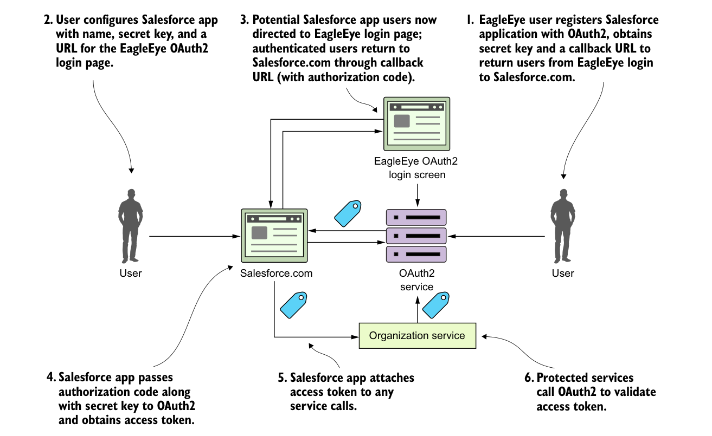

credentials across multiple applications. It also enforces an extra layer of checking by not letting a calling application immediately get an OAuth2 access token, but rather a “pre-access” authorization code.
The easy way to understand the authorization grant is through an example. Let’s say you have an EagleEye user who also uses Salesforce.com. The EagleEye customer’s IT department has built a Salesforce application that needs data from an EagleEye service (the organization service). Let’s walk through figure B.3 and see how the authorization code grant flow works to allow Salesforce to access data from the EagleEye organization service, without the EagleEye customer ever having to expose their EagleEye credentials to Salesforce.

The authentication code grant allows applications to share data without exposing user credentials.
- The EagleEye user logs in to EagleEye and generates an application name and application secret key for their Salesforce application. As part of the registration process, they’ll also provide a callback URL back to their Salesforce-based application. This callback URL is a Salesforce URL that will be called after the EagleEye OAuth2 server has authenticated the user’s EagleEye credentials.